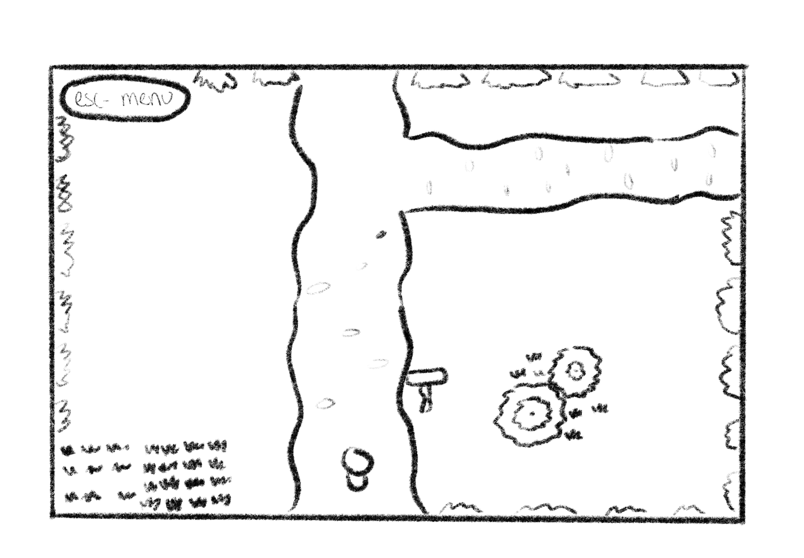
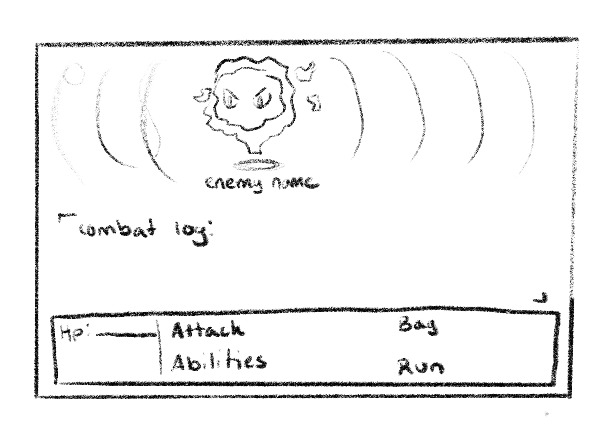

In this turn based rpg, similar to the older final fantasy games, The user will explore an uncharted island to find what treasures can be found while fighting off monsters.
Adventure, turn-based combat, rpg
Desktop only
The player is an explorer who comes across an uncharted island, attempting to uncover the island's secrets the player runs across the native inhabitants who are less then pleased to see someone invading their lands.
The player can explore the island opening chests and finding treasure. While getting into encounters with hostile creatures that are turn-based combat encounters
Keyboard and mouse: WASD to move, ESC, for a game menu, and the mouse to select options.
The user will have the basic instructions on the side of the screen to tell them how to move and signs will be in the game that can be interacted with for more tutorial guidelines if needed
The player will have to make a mental map of the island to navigate it, learn the strengths and weaknesses of the creatures they encounter, and the abilites they should use to exploits those weaknesses
 
WIP
Hello! my name is Iain Roach, i'm a 2nd year Game Development and Design student at Rit I've taken courses that cover c#, javascript, html, css, unity, maya, and photoshop. My main interest involves game programming and world building.